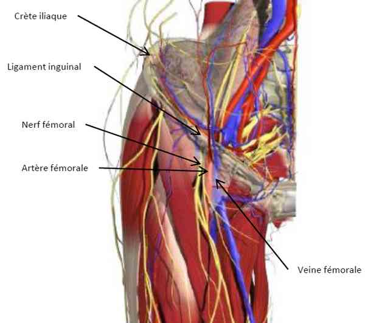

Bienvenue Sur Medical Education
Cathétérisme veineux fémoral
AdulteSpécialité : vasculaire /
Points importants
- C'est la voie veineuse centrale la plus facile à apprendre et à utiliser pour l'urgentiste
-
Dans le cadre d'un arrêt cardiaque, il est préférable d'utiliser un long cathéter de 60 cm afin d'avoir son extrémité distale en intra-thoracique
Indications
- Impossibilité d'obtenir une voie d'abord veineuse périphérique
- Remplissage vasculaire rapide et important
-
Administration de drogues cardio ou vaso-actives
Contre-indications
- Infection locale
- Traumatisme local
- Thrombose
-
ATCD de pontage aorto-fémoral ou fémoro-fémoral
Présentation du matériel
- Gants, casaque stériles
- NaCl 0,9% 500 mL avec tubulure prête
- Anesthésique local
-
Kit de cathétérisme central :
- champ stérile
- désinfectant local
- compresses stériles
- bistouri
- dilatateur avec guide métallique
- cathéter intraveineux
- aiguille et fil de fixation
-
pansement stérile autocollant
Description de la technique
 fichier_527 Anatomie de la région fémorale
fichier_528 fichier_528 - - - Cathéterisme veineux fémoral
- Mettre le membre inférieur en flexion et abduction
-
Point de ponction :
- repérer le ligament inguinal
- palper l'artère fémorale (ou utiliser une sonde d'échographie)
- le point de ponction est situé 2 cm au-dessous du ligament inguinal et 1 cm en dedans de l'artère fémorale
- Nettoyer la peau avec la solution désinfectante
- Mettre le champ stérile
- Faire une anesthésie locale
- Préparer le kit de cathétérisme central et purger toutes les voies avec du NaCl 0,9%
- Insérer progressivement l'aiguille introductrice connectée à une seringue. L'angle d'insertion doit être d'environ 45° par rapport au plan cutané
- Toujours progresser en aspirant en permanence le piston de la seringue et en palpant l'artère fémorale avec l'autre main
- Quand le sang veineux est aspiré au niveau de la seringue, arrêter la progression
- Déconnecter alors le seringue de l'aiguille
- Introduire le guide métallique à travers l'aiguille. Il doit passer sans aucune résistance dans la lumière vasculaire (si c'est le cas, réduire l'angle de l'aiguille)
- Retirer l'aiguille tout en maintenant fermement le guide métallique
- Faire une incision cutanée avec le bistouri
- Introduire le dilatateur par le guide métallique et l'enfoncer dans le plan cutané par des petits mouvements de rotation
- Enlever le dilatateur tout en maintenant le guide
- Insérer le cathéter veineux à travers le guide jusqu'à proximité du plan cutané
- Retirer progressivement le guide en maintenant à ce niveau le cathéter jusqu'à voir apparaître l'extrémité distale du guide au niveau d'une des voies du cathéter
- Enfoncez alors le cathéter jusqu'à la garde en maintenant en même temps l'extrémité distale du guide tendu afin de faciliter cette introduction
- Enlever ensuite le guide métallique
- Confirmer la bonne position intravasculaire du cathéter en aspirant du sang veineux au niveau de chacune des extrémités distales de celui-ci et en le réinjectant grâce à une seringue contenant du NaCl 0,9%
- Fixer le cathéter
-
Nettoyer, sécher la peau et mettre un pansement stérile autocollant
Précautions d’emploi
- Bien purger le cathéter avec du NaCl 0,9% avant emploi afin d'éviter toute embolie gazeuse
-
Attention à ce que le cathéter ne se coude pas par la position du membre inférieur du patient
Complications
- Infection
- Thrombophlébite
- Ponction artérielle
-
Hématome
Bibliographie
- Tsui JB, Collins AB, White DW, Lai J, Tabas JA. Placement of a femoral catheter. N Engl J Med 2008 ;358:e30
Auteur(s) : Patrick PLAISANCE